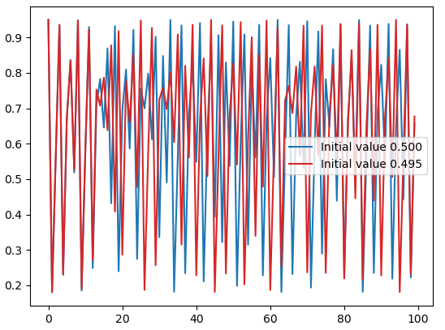
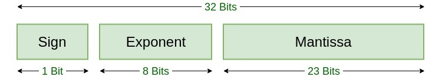
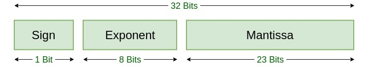
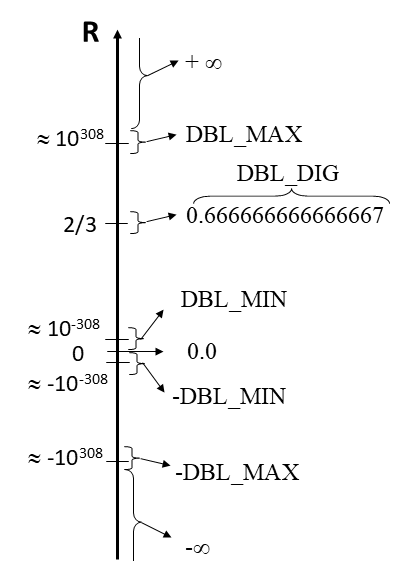
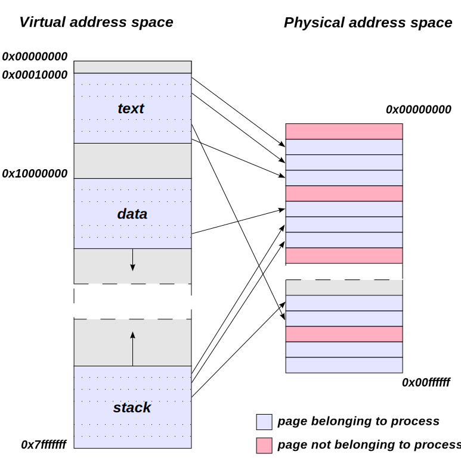

flowchart LR
B{expression != 0} -->|true| C[statement_true]
B -->|false| E[statement_false]
Scientific C for programmers
Steven Vandenbrande
Introduction
Who am I?
Main lecturer: Steven Vandenbrande
- Member of the HPC Support Team of ICTS
- HPC (High Performance Computing):
KU Leuven offers Tier-2 cluster to researchers,
part of the Vlaams Supercomputer Centrum (VSC 1) - Background in molecular modeling
Support during hands-on sessions from Jan De Laet
Who are you?
Please present yourself:
- Your name
- Your scientific background
- Your programming background
- Why you want to learn scientific C
Practical aspects
- Four sessions of 3 hours (with a break)
- Course website:
https://stevenvdb.github.io/Scientific-C-for-programmers/ - Hands on: make sure you have a working C environment
Tip
First run of this course, feedback is much appreciated.
Warning
These slides are not intended as a reference manual, but to accompany a talk. A book like The C programming language is better suited as a reference.
Outline
Day 1
Introduction
- Motivation
- Context
- Course overview
Jumping in
- Hello, world
- Temperature conversion
- Logistic map
Day 2
Basics of C
- Types and operators
- Control flow
- Functions
Day 3
Advanced C
- Arrays and pointers
- Structures
- Input and output
Day 4
Beyond the core of C
- External libraries
- Segmentation faults
- C standards
Wrapping up
Motivation
Why learn to program in C?
Why learn to program in C?
Didn’t AI agents take over programming? In my opinion:
- AI agents are invaluable assistants
- Still benefit greatly from a prompter with expertise because:
- They will confidently write code that is wrong
- They will often produce sub-optimal code (speed, maintainability, …)
Warning
This opinion might be outdated very soon.
Why learn to program in C?
I encourage you to use AI assistance during this course
- You will use it in real-life coding
- You need to learn how to use it
with two caveats:
- The exercises are educational,
AI might perform better than for your real problems - Don’t cheat on yourself,
try to understand the answers to learn something
Why learn to program in C?
- Relatively low level, close to hardware
- Popular to write system software (OS for example)
- Gives insight into computer architecture
- Potentially gives good performance
- Fairly popular in scientific computing
- Small and stable language, syntax can be learned quickly
- Good basis to learn other programming languages
- You inherited a project written in C
- Not a good intrinsic motivation, but a reality
Context:
the landscape of
scientific programming
Scientific programming landscape

Assembly
- Very low level, essentially machine code in readable format
- Machine dependent, specific to each architecture
- Used in performance-critical parts of low-level libraries
- If you are not sure you need it, you don’t

Tip
The godbolt project gives a taste of what assembly looks like.
C
- First appeared in 1972, successor of B
- First standard in 1989, four revisions since
- Compiled language with static typing
- Small language and standard library
- Gives a lot of low-level control (e.g., memory management)

C++
- Extension of C, adding object-oriented features
- Compiled language with static typing
- Allows better and more complex project constructs
- More syntax and much larger standard library
- In principle retains all benefits from C,
in practice you program differently

Rust
- “Modern” version of C/C++
- Very different approach to memory management:
- C/C++ are prone to bugs causing safety issues
- Rust is proposed as an alternative, see DARPA: Translating all C to Rust
- Not as problematic for programs you run locally
- Ecosystem for scientific computing not as advanced as C/C++, but efforts are under way
- Example of a project for high-performance data manipulation: Polars dataframes

Fortran
- Fortran (Formula Translating System) appeared in 1957
- Compiled language with static typing
- Object-oriented features added in 2003 standard
- Still a lot of Fortran compilers produce fast code
- Good fit for mathematical applications
- Since the 2008 standard: coarrays as a built-in parallel programming model

Java
- Syntax influenced by C/C++, supports object orientation
- Source code compiled to Java bytecode which runs in virtual machine
- in principle slower code execution
- Memory safety and automatic garbage collection
- Quite often used in bio informatics

Scientific programming landscape 1
Julia
- Designed for technical and numerical computing
- Dynamically typed, supports multiple paradigms
- Scripted language with some support for compiling
- Designed for parallel computing

Python
- Scripting language, runs in Python interpreter
- Dynamically typed, garbage collection
- Perceived as easy to learn
- Not very efficient (unless actual work is done by C/Fortran)
- Popular in scientific computing, including machine learning 1
R
- Aimed at statistical computing and visualization
- Interpreted language, runs in R interpreter
- Similar in many aspects to Python
- Popular in some fields such as social sciences and economics

Matlab
- Proprietary numeric computing environment
- Extensive built-in functions for linear algebra, signal processing, optimization, and statistics

Scientific programming landscape
Programming accelerators
- Thus far: general-purpose programming languages for CPUs
- GPUs (originally for visualization) are well suited for scientific computing
- Require dedicated programming languages
- CUDA for NVIDIA GPUs
- ROCm for AMD GPUs
- OpenCL/OpenMP/… support multiple devices
Parallelization
- High performance computing (HPC) is all about parallelization
- Nearly all programming languages are inherently serial,
parallelization has to be added - Several paradigms:
- pthreads (OS level)
- OpenMP: shared-memory parallel programming in C/C++ and Fortran
- MPI: message passing interface for communication between processes
Scientific programming landscape
Conclusions:
- Knowing multiple languages is useful
- Allows you to use the right tool for the right job
- For example, C for computationally-intensive parts, Python for post processing
- Select a few languages in which you become an expert
- Look beyond intrinsic properties, the ecosystem and support is important
Course overview
What you will learn in this course
- the place of C in the landscape of scientific programming languages
- learn (most of) the C syntax 1
- write and run basic C programs with a focus on programming concepts encountered in science
- how to use external libraries when writing C code
What you will not learn in this course 1
- How to do HPC => HPC intro and Linux for HPC
- Build systems => CMake intro and Makefile intro
- Version control => Version control with git
- Optimizing code => Code optimization
- Debugging code => Defensive programming and debugging
- Parallel programming => Parallel programming
- Setting up an Integrated Development Environment (IDE)
What you will not learn in this course 1
Tip
The calendar of VSC Training sessions can be found at https://www.vscentrum.be/vsctraining. Learning paths that show connections between training sessions can be found at https://gjbex.github.io/Training-sessions.
Outline
Day 1
Introduction
- Motivation
- Context
- Course overview
Jumping in
- Hello, world
- Temperature conversion
- Logistic map
Day 2
Basics of C
- Types and operators
- Control flow
- Functions
Day 3
Advanced C
- Arrays and pointers
- Structures
- Input and output
Day 4
Beyond the core of C
- External libraries
- Segmentation faults
- C standards
Wrapping up
Jumping in
The obligatory “Hello, world”
Goal: Print Hello, world on the screen
Learning outcome: Compile and run a C program
Instructions:
- Open the Visual Studio Code app via https://ondemand.hpc.kuleuven.be if you have a VSC account
- Use a C environment on your local machine if available
- Create an app on https://replit.com/languages/c otherwise
Create a text file called hello.c containing:
Compile and run it in a terminal as follows:
Tip
You can use another compiler such as clang if you prefer, some options can be different.
Temperature conversion
Goal:
- Print a table with temperatures in Fahrenheit and Celcius, the formula is \(^\circ C= \frac{5}{9}(^\circ F - 32)\)
Learning outcome:
- Exposure to variables, operators and loops
- Correct some common errors
Instructions:
- The training repository contains files needed for the exercises
Download the repository with
Alternatively, visit https://github.com/stevenvdb/Scientific-C-for-programmers/ in a browser
- This exercise is located in
exercises/01_temperature_conversion
#include <stdio.h>
int main() {
float fahr, celcius;
float lower, upper, step;
lower = 0; // Lowest temperature in Fahrenheit
upper = 100; // Highest temperature in Fahrenheit
step = 10; // Increment of temperature
fahr = lower;
while (fahr < upper) {
celcius = (5 / 9) * (fahr - 32);
printf("%8.1f %8.1f\n", fahr, celcius);
fahr = fahr + step
}
return 0;
}Fix the problems (there are 3) to compile and run the code:
Logistic map
- Simple formula to model evolution of population size \(N_n\):
\[ N_{n+1} = (a-bN_n)N_n \]
- Intuitive explanation:
- \(N_{n+1} \propto N_n\): increases with more offspring
- \(N_{n+1} \propto (a-bN_n)\): decreases because of competition
- Normalized version: \(x_{n+1} = r(1-x_n)x_n\) with \(0\leq x_n \leq 1\)
Logistic map
Goal:
- Print evolution of a population according to logistic map
Learning outcome:
- Write your first function
- Learn how to read input values
Instructions:
- Implement the
update_populationfunction - Read the initial population from input
- Check README.md in
exercises/02_logistic_map
Logistic map: solution
- A function can accept multiple typed arguments
- A function can at most return 1 typed value
- Mathematical expressions should be fairly intuitive
- Input can be read interactively with
scanf- Be careful, you should thoroughly check input
Logistic map: discussion
- Comparison of two populations with slightly different initial populations (\(r=3.8\))
- Initially, two populations stay relatively close
- After a certain time they completely decorrelate => example of a chaotic system

Basics of C
Outline
Day 1
Introduction
- Motivation
- Context
- Course overview
Jumping in
- Hello, world
- Temperature conversion
- Logistic map
Day 2
Basics of C
- Types and operators
- Control flow
- Functions
Day 3
Advanced C
- Arrays and pointers
- Structures
- Input and output
Day 4
Beyond the core of C
- External libraries
- Segmentation faults
- C standards
Wrapping up
Data types, operators and expressions
Data types, operators and expressions 1 2
- Variables are the basic data objects manipulated in a C program
- C is statically typed: a variable is of a specific type defined at compile time
- C allows manipulation of variables by expressions with operators
The very basics
- C statements 1 end with a semicolon
- Braces
{}are used to group statements into a code block - Whitespace is mostly ignored, allows to improve readability
- Compiler ignores what comes after
//and between/*and*/
Names of data objects in C
- are case sensitive
- consist of
{A,...,Z,a,...,z,_,0,...,9} - start with
{A,...,Z,a,...,z,_} - can have any length, but at most:
- variables: 31 significant, 64 for C99+
- functions: 6 significant1, 32 for C99+
- cannot be reserved words such as
if,while,char,int, …
Conventions for names
- variables, functions: start with lowercase
- constants, type names: start with uppercase or fully capitalized
- names reflect semantics of entity!
- variables with very small scope have a short name
- camelCase (e.g.,
nrOfRuns) or underscoresnr_of_runs
Tip
Try to be consistent within a project. If you might share code with others, try to stick to a generally accepted code style, e.g. the GNU coding standard
Overview of data types
char: single characterint: integer, allows qualifiers (signed,long, …)float/double/long double: real numbersenum: list of constantsstruct: structure, group of related variables
Characters
- a
charholds 1 character of the local character set - usually 1 byte, check with the
sizeofoperator - limits are defined in
limits.hheader asCHAR_MINandCHAR_MAX charcan be signed or unsigned- almost always irrelevant, just use
char
- almost always irrelevant, just use
- Example:
char myChar = 'b';"b"is a string (=array of chars)!
Special characters are escaped with \
'\a': bell'\n': new line'\r': carriage return'\t': horizontal tab'\\': backslash'\'': single quote'\"': double quote'\0': null character (terminates strings)
Strings?
- C does not have a basic string type
- There are two ways to declare a string constant:
An array of characters: 1
A character pointer: 2
Strings?
- String constants are terminated with
\0internally- Allows to know where string ends
- You do not need to know this if you use functions from the standard library to work with strings
Integers
int: typically 4 bytes, offers \(2^{32}\) distinct values- modifiers:
unsigned int: only non-negative integers, natural for array indicesshort int/long int/long long int: different ranges compared to plainint, can be combined withunsigned
Tip
The range of int can be a limitation in practice, think about the range you need and choose the appropriate type.
Fixed-size integers
The C standard only imposes a minimal range for integers:
- For example,
intshould at least cover \([−32767, +32767]\) - Some platforms provide larger range => code is potentially platform dependent
If you need a fixed range:
- Include the
stdint.hheader - Use
uint8_t,int16_t, …, which provide exactly the specified number of bits
Real numbers
- Real numbers are represented in a computer in a format very similar to exponential notation1
- Computer uses binary representation, e.g., the IEEE SP standard:
- Exponent determines range
- Mantissa determines precision
 
 
Double precision

- a
doubleis usually 8 bytes and gives about 15 decimal digit precision - the
float.hheader provides:DBL_MAX: largest positivedoubleDBL_MIN: smallest positivedoubleDBL_EPSILON: difference between1.0and next representable value (\(\approx\) machine precision)BLD_DIG: number of significant decimal digits
Basic floating-point representations
double: most often used in sciencefloat: half the number of bits compared todouble, usually 7 decimal digit precisionlong double: usually larger range thandouble, not used often
Note
In deep learning, reduced-precision formats (FP16, FP8) are often used. Only dedicated devices like GPUs give hardware support.
Enumeration
enummakes it convenient to refer to constants symbolically- Using automatic integer numbering:
- Using custom values:
Type conversion
- In constants, use suffix, e.g.
123456789Lis along int - In expressions, automatic conversion to largest type, e.g.
5/9.0is interpreted as5.0/9.0 - Explicit casting with brackets, e.g.
(int) 5.3- this evaluates to the integer 5, so information is lost
Accidental type conversion
- What do you expect the following code will do?
Accidental type conversion
- Compilation with
-Wconversionflags provide a hint
Variable declaration
- C is statically typed, each variable has to be declared with type information:
int a, b; - Can be combined with an assignment, but no automatic initalization:
double x = 3.2, y;double z = sqrt(2.0);
- Constants cannot be modified during runtime, must be assigned on declaration:
const int MINUTESPERHOUR = 60;- Convention: names of constants are capitalized
Booleans
- The original C89 standard does not have a boolean type
- true: non-zero integer, non-NULL pointer
- false: zero, NULL pointer
- The C99 standard adds the
booltype andtrue/falsekeywords (after including<stdbool.h>) - The C23 standard provides booleans by default
- You can get by with the C89 approach, dedicated
booltype might be somewhat more efficient in some cases
Exercise: data type sizes
Goal:
- Print information about sizes and ranges of several types
Learning outcomes:
- Understand C data types
Instructions:
- Extend the program provided in
exercises/04_data_type_sizesto print information about more types and ranges - Explain the relation between sizes and ranges
Exercise: data type sizes solution
Code:
Output:
- 4 bytes = 32 bits:
intis in \([-2^{31}, 2^{31}-1]\) - 8 bytes = 64 bits:
unsigned long intis in \([0, 2^{64}-1]\)
Exercise: data type sizes solution
Code:
Output:
- Exponent has 11 bits -> in range [-1023,1024] -> \(2^{1024} \approx 10^{308}\)
- Mantissa has 52 bits -> 52 significant digits in binary -> \(52 \log_{10} 2 \approx 15.6\)
Operators
Overview of operators
- arithmetic operators
- relational operators
- logical operators
- bitwise operators
- assignment operators
- incremental operators
- conditional operator
Arithmetic operators
- addition, subtraction:
+,- - multiplication, division:
*,/- integer division truncates fractional part,
5/9equals0
- integer division truncates fractional part,
- modulo (only for integers):
% *,/,%take precedence over+and-
Tip
Use brackets for clarity instead of relying on precedence rules
Relational operators
- order:
- smaller, smaller or equal:
<,<= - larger, larger or equal:
>,>=
- smaller, smaller or equal:
- equality:
- equal to, not equal to:
==,!=
- equal to, not equal to:
Tip
Be careful when comparing doubles, e.g. pow(sqrt(5.0), 2) == 5.0 is false!
Logical operators
- logical and, logical or:
&&,||- evaluated left to right with early stopping,
(i < N) && (a[i] > 0)will not accessa[i]unlessi < N
- evaluated left to right with early stopping,
- unary negation
!- converts non-zero operand into 0 and zero operand into 1
- zero is false, non-zero is true
Increment/decrement operators
- C specific shorthand notation
- increment:
i = i + 1;is the same asi++;or++i; - decrement:
i = i - 1;is the same asi--;or--i;
- increment:
- post/pre increment matters when value is used, for example in assignment:
int j = ++i;: first incrementi, then assign it tojint j = i++;: first assignitoj, then incrementi
Note
The name C++ can be interpreted as “incremented C”
Bitwise operators
Manipulate bits of integers (signed and unsigned char, int, long, …)
- Bitwise and, or, xor:
&,|,^0011 & 0101->0001
- Shift bits left, right:
<<,>>0111 1000 >> 2->xx01 1110- x is zero if unsigned, undefined otherwise
- One’s complement:
~~1101->0010
Tip
Bitwise operators are powerful, but also tedious. Use with care!
Assignment operators
- Simple assignment is done with
=(do not confuse with comparison==) - Assignment operators allow to compress statements:
i = i + 2;is the same asi += 2;- Most binary operators have a corresponding assignment operator
- More concise, but often more intuitive as well
Conditional expression
Conditional expression is a ternary operator condition ? expr_true : expr_false
- Evaluate the
condition- If true, evaluate
expr_trueas the result - If false, evaluate
expr_falseas the result
- If true, evaluate
Precedence and associativity
- K&R provide a table with precedence rules (2.12)
- Make your code readable and maintable by using brackets
- C does not specify order of evaluation for most operators:
- order can even depend on compiler options
x = f() + g();might evaluategbeforef- important if
galters variable used byf
- important if
a + b + c;could be(a + b) + cora + (b + c)- floating-point arithmetic does not preserve mathematical associativity
Exercise: operators
Goal: Solve a few operator-related programming questions Learning outcome: Understand the basics of C operators Instructions: See exercises/05_operators
Tip
This exercise uses the assert() function to check your solution. This function can be useful for debugging, but should not be used in production code.
Tip
You can easily “cheat” the assert() statements, but that is not the intention of course.
Exercise: operators solution
Implement a function that returns if a year is a leap year: easy to achieve by combining modulo and logical operators.
Exercise: operators solution
// Multiply i by 8 and store it in j, but without making use of the * operator
// Hint: use a bitwise operator
int i = 5;
int j = i << 3;
assert(j == 40);
// Compute c as the minimal value of a and b without using an if-else statement
int a = 126;
int b = 45;
int c = (a < b) ? a : b;
assert(c == b);Control flow
Control flow 1 2
- Control flow statements specify order in which computations are performed
- Often multiple ways to achieve the same end result
- Involves an element of personal preference
- One way might provide faster code than another
Statements and blocks
- Use
;to terminate a statement - Group multiple statements in blocks with braces
{}blocks can be nested
variables can be redeclared and have block scope
Tip
Use blocks to make your code more readable, unless you want to participate in the The International Obfuscated C Code Contest
if-else statement
- The
elseclause is optional - For a single-line statement, braces are optional
- Indentation is only for style, but helps for readability
if (expression)is the same asif (expression != 0)
else-if statement
flowchart LR
B{expression1} -->|true| C[statement1]
B -->|false| E{expression2}
E -->|true| F[statement2]
E -->|false| G[statement3]
- General way to write a multi-way decision
- The
elseclause is optional
Switch
- Multi-way decision to branch based on comparison with constant integer values
- Fall through: execution goes to next case
- You can leave a
switchwithbreakorreturn
- You can leave a
- Case expressions must be constant and unique
defaultis optional
Switch example
For loop
expr1: executed once at start, typically for initializationexpr2: evaluated at start of each iteration, for loop stops if falseexpr3: evaluated at end of each iteration
For loop
- Should be used when number of repetitions is known or computed
- Each expression is optional,
for (;;) {}is an infinite loop breakin loop body terminates loopcontinuein loop body goes to next iteration
While loop
statementsare executed zero or more times, as long asexpressionis true- should be used when number of repetitions is unknown
Do-While loop
statementsare executed at least once, untilexpressionis false- Similar to
whileloop, butexpressionis evaluated at end of iteration
Goto and labels
gotoallows to branch to a specifiedlabel- never necessary, often makes code hard to read
- even C inventors discourage it, do do not use it
Functions and Program Structure
Functions and Program Structure 1 2
- Functions break large computing tasks into smaller ones
- Help to bring structure into code
- Hide implementations details
- Make it easier to reuse existing code
Basics of functions
- A function can have no arguments:
int myFunction(void); - A function can return nothing:
void myFunction(int A);- No
returnstatement in body required
- No
- The compiler requires a function to be known before it can process a call
- Declare the function:
return-type function-name(type1 arg1, type2 arg2); - Declaration is promise to provide implementation later
- Declare the function:
Function examples
Return statement(s)
- A return statements returns a value (or nothing), but also returns control to the caller
- A function can have multiple return statements, but at most one is executed in each call
- The returned expression is converted to function’s return type
More on functions
mainfunction is special: always the entry point of the program- C passes arguments by value, inside the function a local copy is made
- changes to values are invisible outside of function
- pointers (see Day 3) allow to circumvent limitations
- A function can only return one variable
- pack multiple values in a
struct - use pointers (see Day 3) to pass out values
- external variables (usually a bad idea)
- pack multiple values in a
Return code of main function
- The return code of
mainis passed as exit code to calling process - Convention is to return
0in case of success, non-zero otherwise - Allows chaining dependent commands, for example in bash:
&&only executes next command if previous one had exit code0
Return code of main function
stdlib.hdefines some macros
#include <stdio.h>
#include <stdlib.h>
int main(void)
{
FILE* fp = fopen("data.txt", "r");
if (fp == NULL)
{
fprintf(stderr, "fopen() failed in file %s at line #%d", __FILE__, __LINE__);
exit(EXIT_FAILURE);
}
/* Normal processing continues here. */
fclose(fp);
printf("Normal Return\n");
return EXIT_SUCCESS;
}External variables
- internal variable: defined inside function
- lifetime and scope limited to function call
- external variable: defined outside function
- bigger scope: globally accessible inside any function
- longer lifetime: keeps value between calls
- alternative for long list of function arguments
Tip
External variables typically make code less reusable, so generally they should be avoided
External variables example
Scope
The scope of a variable or function is the part of the program where the variable of function can be used
- Local variables
- From definition until end of block
- Includes function arguments
- External variables
- From definition until end of file
- Can be used in multiple files by declaring with
extern(not covered)
Header files and build systems
- So far: small programs in one
.cfile: easy to compile - Larger projects: many source files
- Order of compilation can matter because of dependencies
- Difficult to remember compilation commands (linking and flags)
- Editing one file does not require recompiling entirely
Header files and build systems
- Use header files:
.hfiles containing shared definitions and declarations#include "example.h"or#include <stdio.h>
- Use a build system (not covered here)
- Makefile (https://github.com/hpcleuven/Makefile-intro]
- CMake (https://github.com/hpcleuven/CMake-intro]
- Meson
Tip
Most exercises can be compiled by running the make command in the exercise directory
Static variables
- Internal variables with
staticdeclaration- Remain in existing across function calls
- Provide permanent private storage within a single function
Static functions
- Functions with
staticdeclaration- A static function is only visible within the file where it is declared
- A normal function is visible everywhere
- External variables with
staticdeclaration- Can only be used in file where they are declared
Initialization
- Automatic internal variables
- Without explicit initialization (such as
int x;), values are “garbage” - Initial value can come from expression:
double y = sqrt(6.0); - Re-initialized each time the block is entered
- Compiler can warn about uninitialized variables
- E.g.,
-Wuninitializedfor gcc (not perfect)
- E.g.,
- Without explicit initialization (such as
Initialization
- Static internal variables
- Guaranteed to initialize to zero
- Initialization first time it is encountered
- Expression or constant expression
- External variables
- Guaranteed to initialize to zero
- Initialized at start of execution
- Constant expression
Recursion
Functions can call themselves (i.e. recursion)
- Each function call has overhead (pushing frame on stack)
- Often not the fastest or lowest footprint
- Deep recursion levels can even cause stack overflow
- Often closer to mathematical description
Tip
When turning on compiler optimizations, recursive functions might be automatically converted to a loop, especially in case of tail recursion (where the recursive call is the last statement).
The C Preprocessor
A few statements are processed before compilation
#include "filename"orinclude <filename>#define name replacement- conditional inclusions with
#if,#elif,#else,#endif
In your head, do not interpret these as C code, but imagine their impact on the code presented to compiler.
The C Preprocessor
#include "myheader.h": includes content frommyheader.hin current directory verbatim#include <math.h>: includes content frommath.hin include directory verbatim- guarantees all source files have same definitions and variable declarations
The C Preprocessor
A macro substitution replaces each occurrence of a name with a replacement, for example #define max(A, B) ((A) > (B) ? (A) : (B))
- Every occurence of
max(x, y)will be replaced - Use with care, can make code more readable, but also obfuscate when reading code for the first time
- Macros avoid overhead associated with function call
The C Preprocessor
Conditional inclusion gives control over preprocessor statements
Variadic functions
- C allows variable-length argument lists (variadic functions)
- The
printffunction is an example we already encountered stdarg.hheader provides utilities likeva_list,va_start,va_arg,va_end
Tip
Use sparingly, variadic functions are somewhat unconventional
Variadic functions
- Example: add variable number of integers:
Exercises
Compute \(\pi\) using Monte Carlo
Goal:
- Write a program that approximates \(\pi\) by using a Monte Carlo algorithm
Learning outcomes:
- Write a loop and use control flow
Instructions:
- The quarter unit circle in the first quadrant has area \(\frac{\pi}{4}\). Approximate this area by generating uniformly distributed points in \([0,1] \times [0,1]\) (
get_random_doubleis provided) and selecting points inside a unit circle - How does the estimate converge with the number of samples?
- See
exercises/06_mc_pi.
Compute \(\pi\) using Monte Carlo

Compiler optimization
- Most compilers have flags to control to which extent executable is optimized
- Examples of optimizations
- Function inlining
- Eliminating common subexpressions
- Vectorization
- Statements of source code are reordered
- Loop reordering
GCC optimization levels
-O0:- No optimization, machine code stays close to source code
- Fast compilation, but slow at runtime
- Good for debugging, never use for production runs!
-O2or-O3:- Optimize, but comply with standards
- Slower compilation, but fast at runtime
- Usually the best option for production runs
-Ofast:- Optimize and possibly ignore standards compliance
- In principle the fastest execution
- Never use without checking results!
Monte Carlo \(\pi\) timings
Compilation without optimizations:
Compilation with optimizations:
Main optimization in this case is probably inlining
get_random_double
Fibonacci
Goal:
- Write a program to compute the Fibonacci sequence
Learning outcome:
- Write (recursive) functions
Instructions:
- The Fibonacci sequence is defined by \({\displaystyle F_{n}=F_{n-1}+F_{n-2}}\) and \(F_0=0, F_1=1\)
- Compute the nth element by using a recursive function
- Try to trigger a stack overflow for large n
- Write a function without recursion
- See
exercises/07_recursion
Advanced C
Outline
Day 1
Introduction
- Motivation
- Context
- Course overview
Jumping in
- Hello, world
- Temperature conversion
- Logistic map
Day 2
Basics of C
- Types and operators
- Control flow
- Functions
Day 3
Advanced C
- Arrays and pointers
- Structures
- Input and output
Day 4
Beyond the core of C
- External libraries
- Segmentation faults
- C standards
Wrapping up
Pointers and arrays
Pointers and arrays 1 2
- C arrays store multiple values of the same type in a single variable
- C pointers contain a memory address of a variable
- Pointers and arrays are closely related in C
Memory management
- Memory is one of the fundamental building blocks of current computer architectures (see von Neumann model)
- In many programming languages, memory management is transparent to programmer
- A variable is stored somewhere in memory, but the programmer does not know where
- Variables are referenced symbolically by programmer, program figures out memory location
- C does allow managing memory yourself, so it needs a concept to allow working with memory addresses
Pointer basics
- A pointer is a variable that contains the memory location (address) of another variable
- The
&operator gives the memory address of a variable - The
*operator gives the value of the variable a pointer points to (dereferencing) - There are different types of pointers, depending on which type they point to
- Declarations like
int *pxindicate thatpxis a pointer and*pxis anint
Virtual memory layout
- I represent virtual memory as a table with three columns
- Address column in hexadecimal format
- Value column in decimal format
- Variable column makes it easier to read, not present in actual implementation
- Remember that internally it’s all binary
- Some variables take up more than one address
| Variable | Address | Value |
|---|---|---|
int x |
0x0000 |
42 |
int y |
0x0004 |
43 |
double a |
0x0008 |
12.6e10 |
double a |
0x000c |
|
float b |
0x0010 |
3.14 |
Swapping variables: naive approach
Swapping variables: naive approach
Swapping variables: naive approach
Swapping variables: naive approach
Swapping variables: naive approach
Swapping variables: naive approach
Working with large arrays
- Suppose you construct vectors using a
struct(see later) - You want a function
double innerProduct(struct vector v1, struct vector v2)that computes the inner product - Since C uses pass-by-value, those objects would be copied when function is called
- Memory access is slow, this would give bad performance for large cases
=> This is also addressed by pointers
Pointer basics
- A pointer is a variable that contains the address of a variable
- Pointer arguments allow modifying object in the called function
- There are different pointer types, depending on the variable they point to, for example,
int *px;ordouble *pa;
Tip
Mnemonic: read int *px as “*px is of type int”. Sometimes people also use int* px to declare an integer pointer.
Pointer basics
- The
&operator gives the address of a variable - The
*operator dereferences a pointer, i.e., gives the value of the variable that is pointed to
Swapping variables: pointers
Swapping variables: pointers
Swapping variables: pointers
Swapping variables: pointers
Swapping variables: pointers
Swapping variables: pointers
Arrays
- An array is a block of consecutive objects of a specified type
int a[10];declares 10 consecutiveintobjects- The i-th element can be accessed as
a[i]
- Pointers are a natural way to loop over arrays
Warning
When pointing to array elements, incrementing a pointer always means going to the next object irrespective of the object type!
Array indexing sourcery
- In C, the name of an array is a synonym for the memory address of the initial element
int *pa = &a[0]is identical toint *pa = a
- Access to the i-th element
a[i]is translated to*(a+i) - Because integer addition is commutative,
a[i]is identical toi[a]!
Arrays as function arguments
- When passing an array to a function, the location of the initial element is passed
- Within the called function, the corresponding local variable is a pointer
- You can pass a part of an array to a function
f(&a[2])passes the subarray that starts ata[2]
Warning
You cannot pass a slice of an array, the called function is responsible to respect the bounds of the array. This is one of the reasons why C programs are often considered at risk for unsafe memory management.
Array decay
- When passed to a function, an array decays into a pointer to its first element
sizeof(arr)inside function gives size of pointer, not array- Array length information is lost
Output:
Character pointers
- C does not have a basic string type
- An array of characters is very similar to a string
- String constants are terminated with
\0internally- Allows to know where string ends
- You do not need to know this if you use functions from the standard library to work with strings
Dynamic memory allocation
- The C89 standard does not allow variable length arrays
- Array size must be known at compile time
size_t len = 5; int a[len];is strictly speaking invalid- Since C99 it is supported and many compilers allow it by default
- Even if you can have VLAs, there are some downsides
- Allocated on stack, so limited in size
- Scope is local, similar as other variables
- VLA might be less efficient
Tip
Variable length refers to the fact that length is only known at runtime, a variable length array remains of the same size during its lifetime.
Dynamic memory allocation
- Memory for arrays can be dynamically allocated on the heap
- Heap is a large area of memory used at runtime
- Signature:
void *malloc(size_t size); sizeis in bytes: make use ofsizeof- returns
voidpointer, cast it to correct pointer type - if memory cannot be allocated, null pointer is returned
- always
free()the memory exactly once! calloc: includes initializing to zero (so slower thanmalloc)
Dynamic memory allocation
Multidimensional arrays
- C supports multidimensional arrays by using multiple
[]
- Indexing is done with
[i][j](not[i,j])
- C uses row-major storage: last dimension is fastest in memory
Pointers to pointers
- A pointer is also a variable -> another pointer can point to its address
- In contrast to multidimensional arrays, we can now have irregular structures
- Example: storing an upper triangular matrix
Arrays of pointers
- By now it should be clear pointers and arrays are very similar
- The previous example as an array of pointers:
Pointers to functions
- Example
- When \(a\) and \(b\) are close, the integral \(\int_a^{b} f(x) dx \approx \frac{1}{2} \frac{f(a) + f(b)}{b-a}\)
- This rule can be written for any \(f(x)\) as:
Exercises
Quadrature
Goal:
- Write a program that can numerically integrate arbitrary functions
Learning outcome:
- Use pointers to let functions operate on arrays and functions
Instructions:
- Write a function that allocates an array, with evenly spaced real numbers in a chosen interval as entries
- Write a function that approximates the integral of
sinandcos^2on the chosen interval - See
exercises/08_quadrature
Heat equation
Goal:
- Write a program that solves the 2D heat equation
Learning outcome:
- Learn to work with multi-dimensional arrays
Instructions:
- See
exercises/09_heat_equation
Heat equation memory leak
- The provided code allocated memory at each iteration without ever freeing it
- This is a memory leak: for larger grids and/or more steps, you would run out of memory
- Make sure to always free memory you allocated with
malloc/calloc - In this case the allocation only has to be done once (outside of the loop)
Structures
Structures 1 2
- A structure is a collection of one or more variables, possibly of different types
- Makes it convenient to organize and handle complicated data
- A very lightweight class (but do not call C object-oriented):
- No inheritance
- No class methods
Structure example
- A structure is defined with
struct, usually followed by a tag as a name
- The variables named in the
structare members and can be accessed with the.operator
Structure example
- A
structcan be initialized directly or member-by-member
Tip
Initializing member-by-member is a bit more robust when the struct definition changes
Structures and functions
- Functions can operate on structures much the same way as basic types
Arrays of structures
- Arrays can be made up of
structs
- Defined in this way, accessing all
xcoordinates would give strided memory access- Having a struct with arrays can be more efficient than an array of structs
- Depends on the specific application
Structures and pointers
- Structures are variables, so you can point to their address
Structures and pointers
- The
.and->operators have highest precedence:*p.xwould be interpreted as*(p.x)(unwanted in our example)- use brackets to make your intention clear
Common data structures
- Multidimensional arrays
- Regular and fixed structure, only members of a single type
- Linked lists
- Allow dynamic lengths and make insertion easy
- Trees
- Represent hierarchical data
- Graph
- More general than trees, allow more complicated topologies
Typedef
The typedef keyword creates an alias for an existing data type
To abbreviate a long type name:
To facilitate switching between precisions or improve portability:
To have a type name closer to its semantical meaning
[look up linked-list implementation to better understand this one]
Unions
A
unioncan hold objects of different types, but only one at a time- Only the last assigned member is guaranteed to hold a valid value
Similar to a
struct, but in a union, members share the same memoryCan be used to have some pseudo-polymorphism in C
Sometimes used to make low-level access easier, for instance interpret a 4-byte int as 4 1-byte chars
Exercises
Size of structure
Goal:
- Write a program centered around a
Personstructure
Learning outcomes:
- Define a structure and functions operating on it
- Think about memory alignment
Instructions:
- Create a
Personstructure with members height, weight, year of birth, and first letter of name - Check the size of the structure in memory and explain the result
- Write a function that computes the total weight of a group of persons [hint: see variadic functions]
- See
exercises/10_struct_basics
DNA sequencing
Goal:
- Write a program to detect motifs in a DNA sequence associated with an increased risk of a hypothetical disease
Learning Outcomes:
- Define and use
structs for organizing biological data - Work with arrays of structs
- Implement string search algorithms in C
DNA sequencing
Consider the following hypothetical DNA sequences:
ID Name Sequence seq1 Alice ATCGGGTAATCG seq2 Bob GGTAATCGGGTA seq3 Carol ATCGATCGGGTA seq4 Dave GGGGATCGATCG seq5 Eve ATCGGGGGGGTA Imagine that the number of times one of the following motifs is present, increases the risk to carry a certain disease:
Motif Disease ATCG Disease1 GGTA Disease2
DNA sequencing
- Construct
structs to represent DNA sequences and motifs - Compute for each sequence and for each disease the risk factor
See exercises/11_dna_sequencing
Input and output
Input and output 1 2
- Input/output is not part of C, but of standard library => need for
#include <stdio.h> - Converting input/output can be tedious (use AI assistant?)
- Make use of dedicated libraries/formats such as HDF5, NetCDF, Zarr
- Annotate data with metadata (units, meaning, etc…)
- Limited coverage in this course, see K&R Appendix B
Writing to standard out (stdout)
printf allows to print internal values as characters in terminal
// int with minimal width 5
printf("a = %5d\n", a); // a = 10
// int with minimal width 5 and zero padding
printf("a = %05d\n", a); // a = 00010
// double with 8 digits after comma
printf("pi = %.8f\n", M_PI); // pi = 3.14159265
// double in exponential notation
printf("pi = %8.2e\n", M_PI); // pi = 3.14e+00
// fixed-width string
printf("%.10s\n", "Hello, world"); // Hello, worReading from standard in (stdin)
scanf:
- returns number of matched items
- stops when format string is exhausted or input fails to match specification
Tip
To run non-interactively, you can redirect file contents to stdin on Linux with ./a.out <inputfile
Command-line arguments
- Command-line arguments are passed to
main - First argument: number of command-line arguments + 1 (typically
argc) - Second argument: pointer to array of character strings (typically
argv)- First array element (at index 0) has name of program
Command-line arguments
File access
- Files are accessed using a
FILEstructure defined instdio.h:FILE *fp; fp = fopen(name, mode);
modecan be readr, appenda, or writew- Make sure to check if
fopenwas succesful by comparing withNULLpointer - Make sure to close file again with
fclose(fp);
File access example
Exercise: regression
Goal:
- Write a program that reads temperature anomalies and predicts future values using simple linear regression
Learning outcomes:
- Learn how to read numbers from a structured input file and process them
Instructions:
- See
exercises/12_regression
Outline
Day 1
Introduction
- Motivation
- Context
- Course overview
Jumping in
- Hello, world
- Temperature conversion
- Logistic map
Day 2
Basics of C
- Types and operators
- Control flow
- Functions
Day 3
Advanced C
- Arrays and pointers
- Structures
- Input and output
Day 4
Beyond the core of C
- External libraries
- Segmentation faults
- C standards
Wrapping up
External libraries
External libraries
- There are literally hundreds of potentially useful scientific libraries
- The ones discussed here are by no means exhaustive or representative for your case
- The intention is to get a feel for how you can proceed to use libraries in general
External libraries overview
- External libraries extend C’s capabilities — especially useful in scientific computing (e.g., linear algebra, FFT, plotting)
- Common scientific libraries:
- GSL (GNU Scientific Library)
- BLAS/LAPACK (Linear Algebra)
- FFTW (Fast Fourier Transforms)
- HDF5 (Hierarchical data format)
- Benefits:
- Avoid reinventing the wheel
- Leverage optimized, tested code
- Improve performance and portability
Using external libraries
- Before you can include calls to external libraries in your code, you typically need to include relevant header files
- Header files define signatures of functions, structs, constants
- To compile code relying on an external library into an executable, you need to link that library
- Typically
-l<libname>, check library documentation
- Typically
Static vs Dynamic Libraries
| Feature | Static Library (.a/.lib) | Dynamic Library (.so/.dll) |
|---|---|---|
| Linking time | Compile time | Runtime |
| Binary size | Larger (library included) | Smaller (library separate) |
| Portability | Easier to distribute | Requires library on target system |
| Updates | Recompile to update | Can update without recompiling |
| Performance | Slightly faster (no indirection) | May have overhead at runtime |
Tip
Use gcc -static for static linking, or -l<libname> with -L<path> for dynamic linking
Tip
Details differ from library to library: check the specific documentation
GNU Scientific Library
- The GNU Scientific Library (GSL) provides a wide range of mathematical routines
- How to get it:
- On the cluster: load it as a module,
module load GSL/2.8-GCC-13.3.0for example - On your machine: install it as a system package,
apt-get install libgsl-devfor example
- On the cluster: load it as a module,
- How to use it:
- Include the relevant headers in your code
- Find relevant link flags with
pkg-config --libs gslfor example
Tip
By loading a module on the cluster, some variables are set to make it easier to use libraries. For instance CPATH will include the path of the header files, LD_LIBRARY_PATH will include the path of the libraries.
Minimizing a function with GSL
See https://www.gnu.org/software/gsl/doc/html/min.html for documentation about one dimensional minimization
#include <stdio.h>
#include <gsl/gsl_errno.h>
#include <gsl/gsl_min.h>
#include <gsl/gsl_math.h>
typedef struct {
double a, b, sigma;
} Params;
// Define a function f according to the GSL rules
double f(double x, void *params) {
Params *p = (Params *) params;
return exp(-p->sigma*x*x)*sin(p->a + p->b*x);
}Minimizing a function with GSL
int main() {
Params params = {0.3, 1.0, 0.05};
double minimum = -2.5, lower = -3.0, upper = 0.0;
int iter = 0, maxIter = 100, status;
const gsl_min_fminimizer_type *T = gsl_min_fminimizer_brent;
gsl_min_fminimizer *minimizer = gsl_min_fminimizer_alloc(T);
gsl_function F;
F.function = &f;
F.params = (void *) ¶ms;
gsl_min_fminimizer_set(minimizer, &F, minimum, lower, upper);
do {
gsl_min_fminimizer_iterate(minimizer);
lower = gsl_min_fminimizer_x_lower(minimizer);
upper = gsl_min_fminimizer_x_upper(minimizer);
status = gsl_min_test_interval(lower, upper, 1.0e-6, 0.0);
} while (status == GSL_CONTINUE && ++iter < maxIter);
if (status == GSL_SUCCESS) {
minimum = gsl_min_fminimizer_x_minimum(minimizer);
printf("f reached the minimum %.6f at %.6f after %d iterations\n", f(minimum, F.params), minimum, iter);
}
gsl_min_fminimizer_free(minimizer);
return 0;
}BLAS: Basic Linear Algebra Subprograms
- Low-level routines for vector and matrix operations
- Levels:
- Level 1: Vector-vector (e.g., dot product)
- Level 2: Matrix-vector (e.g., solving triangular systems)
- Level 3: Matrix-matrix (e.g., matrix multiplication)
LAPACK: Linear Algebra PACKage
- Built on top of BLAS
- High-level routines for:
- Solving linear systems
- Eigenvalue problems
- Singular value decomposition
BLAS & LAPACK
- Why use them?
- Highly optimized for performance
- Portable across platforms
- Widely used in scientific and engineering applications
- Many implementations are available
- OpenBLAS - Intel MKL - ATLAS
- Often implemented (partially) in Fortran and assembly
- C bindings nearly always available though
Tip
Link typically happens with -lblas -llapack, but this can be different for optimized implementations like OpenBLAS, Intel MKL, or ATLAS.
Dot product in BLAS
Tip
On the cluster, use module load OpenBLAS/0.3.27-GCC-13.3.0 and link with -lopenblas
HDF5: Managing Scientific Data in C
- HDF5 (Hierarchical Data Format v5)
- Designed for storing and organizing large, complex datasets
- Supports n-dimensional arrays, tables, images, and metadata
- Common in physics, climate modeling, bioinformatics, and engineering
- Features
- Portable and self-describing binary format
- Hierarchical structure: groups and datasets (like folders and files)
- Supports compression, parallel I/O, and chunking
HDF5: schematic view of an HDF5 file

HDF5: writing a dataset
#include "hdf5.h"
int main() {
hid_t file_id, dataset_id, dataspace_id;
hsize_t dims[2] = {4, 6};
double data[4][6] = { /* initialize with values */ };
file_id = H5Fcreate("example.h5", H5F_ACC_TRUNC, H5P_DEFAULT, H5P_DEFAULT);
dataspace_id = H5Screate_simple(2, dims, NULL);
dataset_id = H5Dcreate(file_id, "/mydata", H5T_NATIVE_DOUBLE, dataspace_id,
H5P_DEFAULT, H5P_DEFAULT, H5P_DEFAULT);
H5Dwrite(dataset_id, H5T_NATIVE_DOUBLE, H5S_ALL, H5S_ALL, H5P_DEFAULT, data);
H5Dclose(dataset_id);
H5Sclose(dataspace_id);
H5Fclose(file_id);
return 0;
}Exercises
Solve a linear system of equations with GSL
Goal:
- Write a program that balances a chemical equation by solving a linear system of equations using GSL.
Learning outcomes:
- Learn how to call functions in GSL.
Instructions:
- Consider the chemical equation \(a C_3H_8 + b O_2 \leftrightarrow c CO_2 + d H_2O\). Write a program that determines values for a,b,c,d such that the equation is balanced (i.e., each element appears as often on the left hand side as on the right hand side). Make use of GSL linear algebra functions to do this.
- Bonus: Find a way to make sure the coefficients are integer
Handwriting recognition
Goal:
- Train a model that can recognize handwritten digits
Learning outcomes:
- Learn how to read “production” C code without understanding all details
- Work with HDF5 and BLAS libraries
Tip
It is not necessary or even wanted to fully understand the mathematics of the model. The following slides contain the essential things you need to know.
Handwriting recognition
Supervised machine learning models:
- Propose a model \(y = f(x; A)\) that relates the input \(x\) to the output \(y\) with a function \(f\) that depends on (currently unknown) parameters \(A\)
- Collect a training set of known input-output pairs of \(\{x, y\}\) and determine the parameters \(A\) such that the model predicts the expected outputs for the training set
- Technically: minimize a cost function using gradient descent
- Use the estimated parameters to compute output for new inputs (inference)
Handwriting recognition
- Input \(\mathbf{x}\): vector of size \(784\) representing grayscale values of an image of \(28 \times 28\) pixels
- Output \(\mathbf{y}\): vector of size \(10\), representing probabilities that image is classified as integer \(\{ 0, 1, ..., 9\}\)
- Model \(\mathbf{y} = \sigma \left( W \mathbf{x} + \mathbf{B} \right)\)
- Perceptron: neuron whose activation depends on weights, biases and inputs
- \(\sigma\) is an activation function, in this case a softmax
- Parameters: \(W\) (\(782 \times 10\)) matrix and \(\mathbf{B}\) (vector of size 10)
Tip
This is not a state-of-the art model, but does demonstrate the essence of even very modern machine learning.
Handwriting recognition
An excellent tutorial is available at https://www.3blue1brown.com/lessons/neural-networks (it uses multiple layers, so more parameters than in our case)

Handwriting recognition
Instructions:
- Use https://github.com/AndrewCarterUK/mnist-neural-network-plain-c as a starting point
- Go through the code and try to get a high-level overview, without getting lost in the implementation details
- Add checkpointing: allow storing parameters at the end of training in HDF5 format. Also allow reading them back in as initial guess to resume training
- Replace the linear algebra operations by calls to BLAS. Compare the performance with the original implementation
- Write a companion program that does inference by using precalculated parameters
- Implement your own feature that you think would improve the code
Handwriting recognition discussion
- After training for 500 epochs: accuracty for test set is about 90%
- Inference for examples outside of test set:
Handwriting recognition discussion
- After training for 500 epochs: accuracty for test set is about 90%
- Inference for examples outside of test set:

Handwriting recognition discussion
- After training for 500 epochs: accuracty for test set is about 90%
- Inference for examples outside of test set:

Segmentation faults
Segmentation faults
- A segmentation fault occurs when a program accesses memory it does not own.
- Common causes:
- Dereferencing NULL or uninitialized pointers
- Accessing memory out of bounds (arrays, strings)
- Writing to read-only memory
Segmentation fault example
What will happen when you compile and run this program?
- The program will not compile
- The program will crash when accessing
A[0]since its value is not initialized - The program will crash when accessing
A[4]since it is outside of the array - The program might crash when accessing any element outside of the array
- The program will always run to completion
Segmentation fault example
Invalid array access gives undefined behavior, the result can depend on the system
- Some elements of the array (
A[2]) have a garbage value- Makes sense, elements were not initialized
- Some elements outside of array (
A[30000]) have a garbage value- Makes sense, you just get what happens to be in memory at
(A + 30000)
- Makes sense, you just get what happens to be in memory at
- The access of
A[90000]gives a segmentation fault- ???
Virtual vs physical memory
- As a user/programmer, you see virtual memory
- Virtual memory creates the illusion of a large, contiguous, uniform address space
- Hides fragmentation of physical memory
- Delegates managing memory hierarchy (caches, RAM, disk) to OS
- Provides safety mechanism to isolate process’ address space

- Mapping to phyical memory in page table
- Out-of-bound memory access can pick up garbage mapping address
- You might be accessing another process’ memory, even on read access the CPU throws a segmentation fault
Segmentation fault example
Invalid array access gives undefined behavior, the result can depend on the system
- Some elements of the array (
A[2]) have a garbage value- Makes sense, elements were not initialized
- Some elements outside of array (
A[30000]) have a garbage value- Makes sense, you just get what happens to be in memory at
(A + 3000)
- Makes sense, you just get what happens to be in memory at
- The access of
A[90000]gives a segmentation fault- This virtual address corresponds to a physical address that is not part of the process
- The operating system reports this as a segmentation fault
Handling segmentation faults
- Do not make coding mistakes :)
- Ask the compiler to instrument executable to
gcc -fsanitize=bounds-strict segmentation_fault.c- Can lead to lower performance
- Run the program under a debugger such as
gdb- Compile with debug symbols (
-g)
- Compile with debug symbols (
Versions of C
Versions of C 1
A brief history of C
- C development starts in the early 1970s
- First standard published in 1989: ANSI C or C89
- Update in 1999: C99 standard
- Update in 2011: C11 standard
- Minor bugfixes in 2017: C17 (sometimes referred to as C18)
- Update in 2023: C23
Different C standards
- The C89 standard is still considered the default
- Compiler has to be instructed to use specific standard:
gcc -std=c11- You need a recent compiler for the most recent standard
- Compilers often do not stick exactly to standard
gccprovides some C99 constructions by default- Options like
-std=c89 -pedanticmake it more strict
The C99 standard additions
- Single-line comments with
// - Variable length arrays
- Mark functions with
inlineto avoid call overhead - Use
restrictto indicate arrays do not overlap - Boolean and complex types in
<bool.h>and<complex.h> - Type-generic macros in
<tgmath.h> - IEEE 754 floating point support
Inline functions
- Function call: expensive
- call stack must be maintained
- stack variables allocated, initialized
- Small functions, called often: lots of overhead
- Inline functions: function code inserted in caller
- good compilers try that anyway
- helping compilers: better optimization!
Restrict keyword for arrays
- Arrays in C:
- decay into pointers, just contain address of first element
- no semantics for compiler
- Multiple arrays as function arguments, do they overlap?
- Help compiler, use
restrict- programmer assures to compiler that arrays don’t overlap
Complex numbers
- Types:
- float complex: single precision
- double complex: double precision
- long double complex: extended precision
- Declarations in complex.h
- types
- literal: I
- functions, e.g.,
creal,cimag,csqrt,cexp, …
Type-generic math
- Automatically selects the correct version of a math function:
float,double, orlong doublecomplexorrealtypes
- Cleaner code: No need to manually choose
sinf,sin, orsinl. - Type safety: Matches function to argument type at compile time.
IEEE 754 floating point support
- float: 4 byte, single precision
- double: 8 byte, double precision
- long double: 12 byte, extended precision
- Rounding well-defined
- Support for Inf, -Inf, NaN
The C11 standard
The _Generic Keyword
Enables type-generic programming (like
tgmath.h)Example:
Mathematics in C23
- New mathematical functions in
math.hsinpi(x)is the same assin(pi*x)with better precisionexp10et al.
- Checked integer arithmetic in
stdckdint.hckd_addet al.
- Support for
1'000and1'133.023notation - Decimal floating-point math (IEEE 754-2008/2019)
Syntax changes in C23
nullptr(keyword) rather thanNULL(macro)true/falsekeywords,stdbool.hnot required- Unnamed function parameters
stdbit.h: bit manipulation functionsstrdup/strndup: simple string duplicationconstexprfor compile-time constantsstatic_assertfor compile-time assertstypeofto determine type at compile time
C23 attributes
- Defensive programming
[[fallthrough]]: intentional fall-through in switch[[nodiscard]]: don’t ignore return value[[maybe_unused]]: don’t warn if not used (function/parameter)[[deprecated]]
- Performance related
[[unsequenced]]: function has no side-effects, calls can be out-of-order[[reproducible]]: function has no side-effect, calls have to be in-order (e.g., random numbers)
Wrapping up
Scientific programming landscape
More to explore
- How to do HPC => HPC intro and Linux for HPC
- Build systems => CMake intro and Makefile intro
- Version control => Version control with git
- Optimizing code => Code optimization
- Debugging code => Defensive programming and debugging
- Parallel programming => Parallel programming
- Setting up an Integrated Development Environment (IDE)
More to explore
Tip
The calendar of VSC Trainings can be found at https://www.vscentrum.be/vsctraining. Learning paths that show connections between trainings can be found at https://gjbex.github.io/.